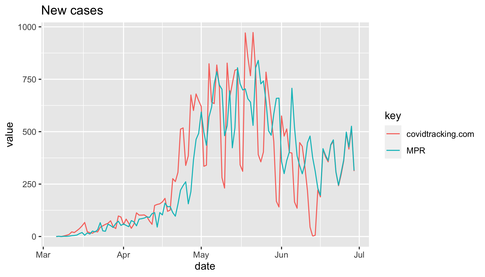

[MN Historicals] Data since May increasingly differs from official.
Minnesota has gradually changed its reporting methods since roughly May 1st to putting interim data in its data tables and updating it as the data is confirmed. They also have changed positive results to representing the date collected. As a result, the data in the COVID Tracking Project since that date almost always disagrees at least a little bit with the official figures, and in some cases is wildly wrong, for example the numbers reported June 15-16:
COVID Tracking Project June 13: 9658 tested, 2 positive, 9 deaths June 14: 0 tested, 6 positive, 15 deaths
MN Department of Health (https://www.health.state.mn.us/diseases/coronavirus/situation.html#testing, https://www.health.state.mn.us/diseases/coronavirus/situation.html#cases) June 13: 9802 tested, 153 positive, 9 deaths June 14: 5019 tested, 148 positive, 15 deaths
To correct this, an update to the data tables is needed, and a new method of adding daily results needs to be used:
- Use the Testing and Cases data tables from the Department of Health to overwrite current historical data for testing and cases and test totals, excepting the previous 7 days before the current date.
- Each day, update the most recent week’s data for cases and tests (total and daily) from the revised data tables on the Minnesota Department of Health site.
- Get the most recent data from the “daily update” at the top of the page after 11am CST and the Testing Data table or working backward from the day-over-day cumulative total.
I understand this is rather laborious. I’ll help any way I can.
That’s exactly as I understood the root cause; thanks for considering fixes. I am a passionate Minnesota resident and I offer any support you need; I am a Senior IT Project Manager and Analyst, and you can find my credentials on LinkedIn as Derek J. Wingert. I volunteered formally last month, so I may be on file somewhere.
Keep up the important good work!
On Mon, Jun 29, 2020, 5:13 PM Matt Hilliard notifications@github.com wrote:
Thanks for reporting this issue @Minibadger https://github.com/Minibadger. Unfortunately the way MN makes its updates and the way we collect data cause these problems. The day with zero positives you mention, June 14th, is an artifact of a previous historical update: #484 https://github.com/COVID19Tracking/issues/issues/484 As part of that issue, we manually synchronized with MN’s case history as it was reported at that time. Since then (a) recent data has drifted out of sync as they continuously revise past days and (b) we once again became a day offset from them because we capture numbers in the afternoon when they are reporting yesterday’s data. The day with 0 new cases is the point where we got 1 day off.
We could manually sync the historicals again, but the same thing would just happen again. Thanks for your suggested alternate collection process…we are currently figuring out what we should do for this and similar states and your idea is one of those being considered.
— You are receiving this because you were mentioned. Reply to this email directly, view it on GitHub https://github.com/COVID19Tracking/issues/issues/553#issuecomment-651397254, or unsubscribe https://github.com/notifications/unsubscribe-auth/APK3QASSZF74GZVMWF25IG3RZEGYXANCNFSM4OKIUW6A .
That’s exactly as I understood the root cause; thanks for considering fixes. I am a passionate Minnesota resident and I offer any support you need; I am a Senior IT Project Manager and Analyst, and you can find my credentials on LinkedIn as Derek J. Wingert. I volunteered formally last month, so I may be on file somewhere. Keep up the important good work! … On Mon, Jun 29, 2020, 5:13 PM Matt Hilliard @.***> wrote: Thanks for reporting this issue @Minibadger https://github.com/Minibadger. Unfortunately the way MN makes its updates and the way we collect data cause these problems. The day with zero positives you mention, June 14th, is an artifact of a previous historical update: #484 <#484> As part of that issue, we manually synchronized with MN’s case history as it was reported at that time. Since then (a) recent data has drifted out of sync as they continuously revise past days and (b) we once again became a day offset from them because we capture numbers in the afternoon when they are reporting yesterday’s data. The day with 0 new cases is the point where we got 1 day off. We could manually sync the historicals again, but the same thing would just happen again. Thanks for your suggested alternate collection process…we are currently figuring out what we should do for this and similar states and your idea is one of those being considered. — You are receiving this because you were mentioned. Reply to this email directly, view it on GitHub <#553 (comment)>, or unsubscribe https://github.com/notifications/unsubscribe-auth/APK3QASSZF74GZVMWF25IG3RZEGYXANCNFSM4OKIUW6A .
Thanks, @Minibadger! I found your application. We will be in touch shortly!
I’m a data journalist from MPR who’s been closely tracking Minnesota’s COVID-19 figures, including manually updating topline numbers on a spreadsheet each day. My spreadsheet has some pretty big discontinuities with the CTP’s Minnesota data, especially from late April through mid June. As of a few weeks ago — right after the dip to near-zero that’s already been mentioned — our data is back in sync:

Notably, when I went back in and looked at the screenshots you’ve taken of Minnesota’s Situation Reports, the numbers there matched my spreadsheet, not the data you’ve recorded. (For example, on June 13, you report 30,465 positive cases, but your screenshot from that evening lists 30,172.)
There’s probably a few things going on here.
- Minnesota has absolutely changed its methodology a few times, most recently on June 5, when it changed its “total testing” from “total people tested” to “total tests”. It’s possible these big changes have messed things up. But as far as I can recall there haven’t been any major changes in their case methodology recently.
- There has been a MINOR change in their case methodology: they’ve started reporting “cases removed” each day, duplicate cases that need to be removed from the previous day’s total to get numbers to line up. Annoyingly, they bury this number at the bottom of a dropdown menu.
- Minnesota annoyingly doesn’t list past case totals anywhere on their situation report. They do have a historical list of cases by the data of sample collection, which is a more accurate way to analyze the disease — but also largely useless for any data that’s more recent than a week, given delays in processing. (Your case data doesn’t match any of this dataset either, so that’s not the issue.)
For my own purposes, I’ve made the decision to not sweat their backfilling, and just report each day’s delta in the totals — if they report 300 more cases today than they did yesterday, I don’t care if 30 of those cases were retroactively assigned to Sunday’s update, I’ll just report an increase of 300. But that may not work for the CTP’s purposes.
Happy to make my spreadsheet available to the project if that’s helpful.
This issue has been automatically marked as stale because it has not had recent activity. It will be closed if no further activity occurs. Thank you for your contributions!
This issue has been closed because it was stale for 15 days, and there was no further activity on it for 10 days. You can feel free to re-open it if the issue is important, and label it as “not stale.”
Thanks for reporting this issue @Minibadger. Unfortunately the way MN makes its updates and the way we collect data cause these problems. The day with zero positives you mention, June 14th, is an artifact of a previous historical update: https://github.com/COVID19Tracking/issues/issues/484 As part of that issue, we manually synchronized with MN’s case history as it was reported at that time. Since then (a) recent data has drifted out of sync as they continuously revise past days and (b) we once again became a day offset from them because we capture numbers in the afternoon when they are reporting yesterday’s data. The day with 0 new cases is the point where we got 1 day off.
We could manually sync the historicals again, but the same thing would just happen again. Thanks for your suggested alternate collection process…we are currently figuring out what we should do for this and similar states and your idea is one of those being considered.